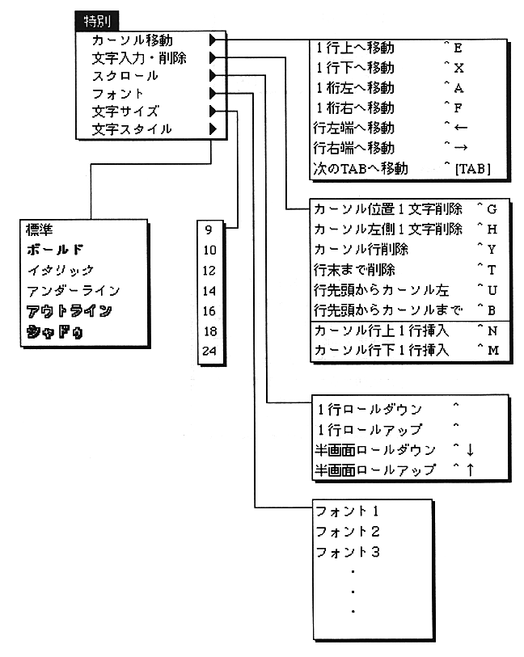

Return to previous page ｜ Return to menu ｜ Go to next page
-
Special menu
- The "Special" menu has a menu that allows you to select items that can be set in the "Shortcut key settings" command of the "Edit" menu, and changes the text display (font, font size, font style) There are commands to do this. Each command has a submenu.

Return to previous page ｜ Return to menu ｜ Go to next page